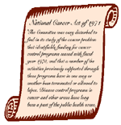

Cancer Control: A Legislative Summary
National Cancer Act of 1971 (P.L. 92-218):
"The Committee was very disturbed to find in its study of the cancer problem that identifiable funding for cancer control programs ceased with fiscal year 1970, and that a number of the activities previously supported through these programs have in one way or another been terminated or allowed to lapse. Disease control programs in cancer and other areas have long been a part of the public health scene, and their importance is incontrovertible, for they are a means of bringing into general medical applications the most practical fruits of research in terms of improved methods of treatment and control. Especially when a major national effort is being mounted to develop new cancer knowledge, it seems ill-advised if not irresponsible to eliminate any useful means for speeding that new knowledge to application for the benefit of the public. Accordingly, the Committee has inserted in its bill authority for the Director of the National Cancer Institute to ‘establish programs in the prevention, control, and eradication of cancer’; and has included specific authorizations to help make sure that these funds intended to help in the attack on cancer are not diverted.
"The Committee sees an important role for NCI in bridging of the gap between research and general medical application. Once the effectiveness of these findings can be demonstrated—to the satisfaction of the scientific community—these results or techniques should be expeditiously communicated to the medical practitioner. The NCI should develop an aggressive and coordinated program to demonstrate the application of recent research discoveries as rapidly as possible, using whatever community resources are available, and communicate these findings to practitioners where these findings can be applied." (House Report No. 92-659, p. 24)